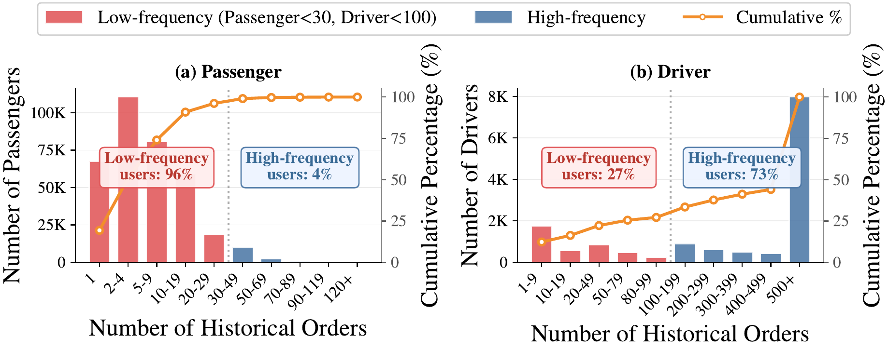
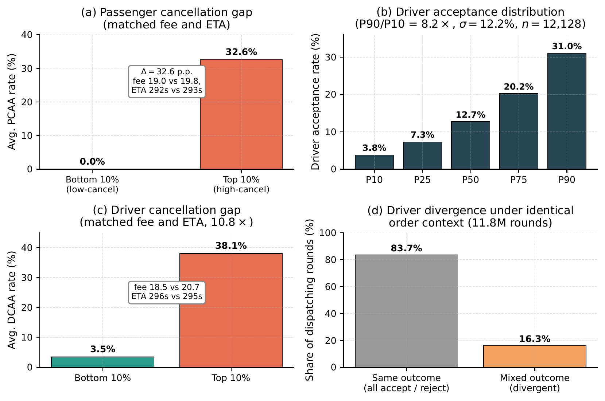
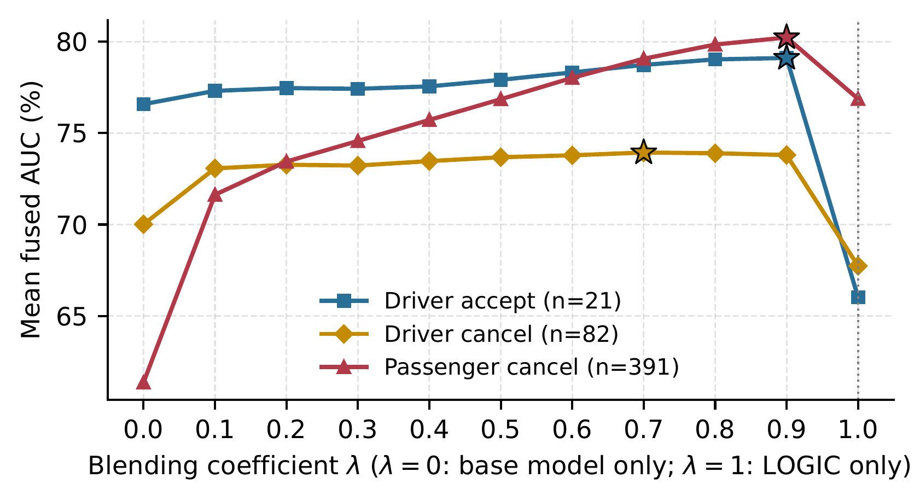
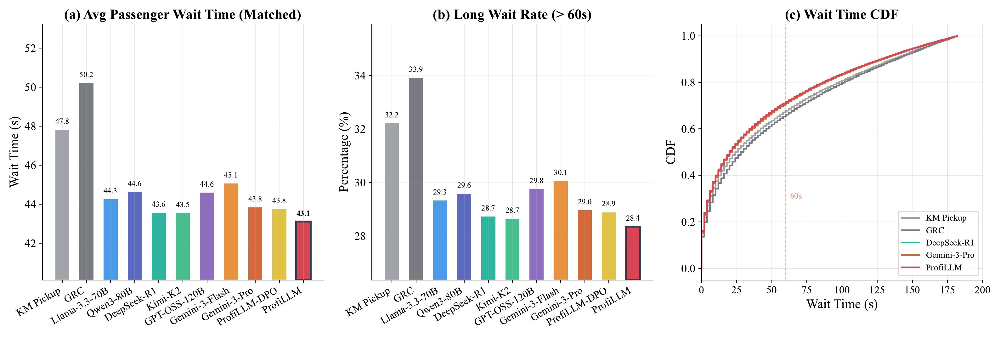
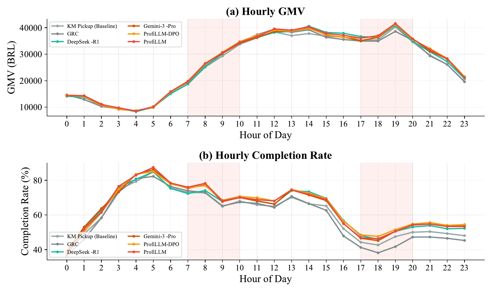
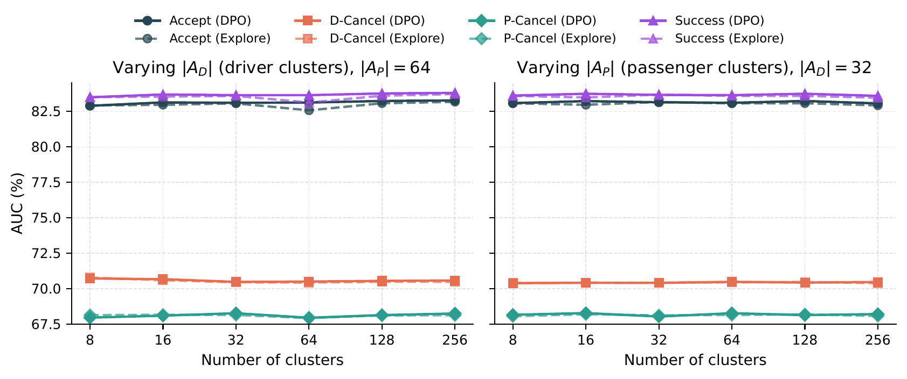
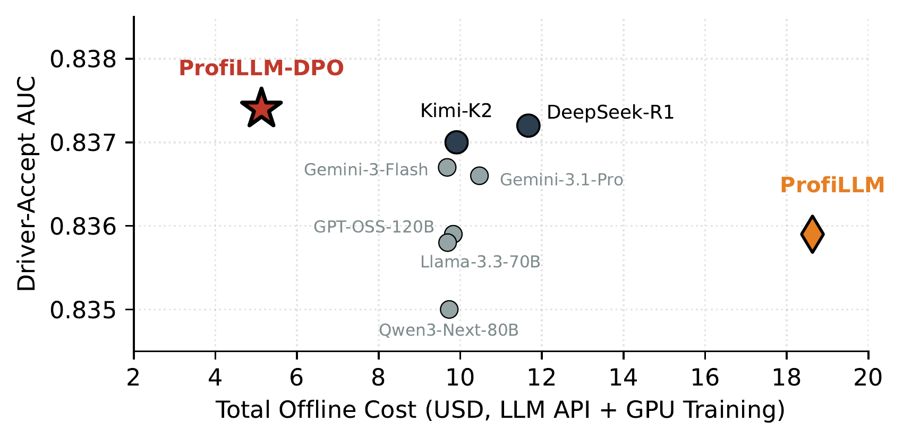

This appendix collects material that the revised paper refers to but that does not fit within the 8-page limit. All numbers are computed from our experiment and production logs.
1User Behavioral Heterogeneity#
All analyses use 38 days of City A production logs (44.3M dispatching records; 333,166 passengers with at least one order; 12,128 drivers with at least ten broadcasts).
Long tail. Of the 333,166 passengers, 20.5% appear in exactly one order, 44.9% in at most three, and 59.3% in at most five; the median passenger has four orders, and 96% have at most 30 (Figure A1). Drivers are more active, but every match involves a passenger.

Structured features leave large unexplained behavioral variance. We partition grabbed orders into 100 buckets defined by fee quintile × ETA quintile × time of day, so that orders within a bucket share nearly identical structured features. Within these buckets, the passenger post-acceptance cancellation rate (PCR) still varies widely across passengers: the average within-bucket standard deviation is 24.9 percentage points, and the P90–P10 spread is 37.1 points. A variance-component (ICC) analysis over the 31,160 passengers with at least 20 orders attributes 15.8% of PCR variance to passenger identity alone, whereas about 3% would be expected by chance with these group sizes.
Decile gaps under matched contexts. Figure A2(a) compares the most and least cancellation-prone passengers among those with at least five grabbed orders: despite nearly identical average fee (19.8 vs. 19.0 BRL) and ETA (293 s vs. 292 s), their PCRs are 32.6% and 0.0%. Panel (b) shows driver acceptance-rate percentiles (P90/P10 \(=8.2\times\), \(\sigma=12.2\%\)). Panel (c) shows that the top-decile driver cancellation rate (38.1%) is \(10.8\times\) the bottom decile (3.5%) under matched order conditions. Panel (d): in 16.3% of 11.8M dispatching rounds, the same broadcast order receives mixed accept/reject decisions from different drivers. Beyond deciles, 9.0% of 42,865 multi-ETA passengers show PCR swings of more than 30 points across ETA bins, and 11.3% of 10,687 multi-tier drivers show an acceptance gap of at least 20 points between high- and low-price orders (7.1% the opposite preference). Because each OD pair has its own driver-side features, panel (d) is descriptive rather than causal evidence.

2The 27 Analytical Operators#
Table A1 lists every operator with its assigned phase, its description (as exposed to the agent), and its parameters. The phase-enforcement engine steers the agent through Explore, Deepen, Validate, and Synthesize with per-phase step budgets of 5/8/5/3 agent steps; a phase cannot end before its required operators (*) have been called. The engine is lenient: it allows operators of the current and earlier phases and only warns when the agent calls an operator assigned to a later phase.
Table A1: Specification of the 27 analytical operators (*: required in its phase; °: optional parameter). All operators execute SQL and statistical routines over a DuckDB table and return aggregated JSON.
| Operator | Description | Parameters |
|---|---|---|
| Explore (5) | ||
AggregateStats* | Calculate aggregate statistics by specified dimension | dimension, metrics, filters°, top_k° |
CompareSegments | Compare different segments on a specific metric | segment_field, metric, filters° |
DetectPeakPeriods | Detect peak periods for order volume or other metrics | metric°, threshold_percentile° |
DayOfWeekPattern | Analyze pattern differences between weekdays and weekends | metrics° |
HourlyPattern | Analyze detailed patterns within 24 hours | metrics°, split_by_weekend° |
| Deepen (11) | ||
UserClustering* | Cluster drivers or passengers around centroids of standardized behavior statistics and summarize each cluster | user_type, n_clusters°, sample_size° |
WeatherFactorAnalysis* | Analyze weather factor impact on order metrics | weather_factor, target_metric°, n_bins° |
FeatureImportance | Analyze key features affecting a target metric | target, features, sample_size° |
SpatialHotspot | Analyze spatial distribution hotspots of orders | metric, grid_field°, top_k°, time_filter° |
ODFlowAnalysis | Analyze Origin-Destination (OD) flow patterns | top_k°, time_filter°, min_orders° |
RegionCharacteristics | Analyze comprehensive characteristic profiles of different regions | grid_field°, top_k°, min_orders° |
SupplyDemandAnalysis | Analyze supply-demand balance across different dimensions | dimension, granularity° |
WaitTimeFactors | Analyze key factors affecting passenger wait time | target_metric°, sample_size° |
MatchingEfficiency | Analyze order matching efficiency metrics | breakdown_by° |
WeatherScenario | Analyze order characteristics under specific weather scenarios | scenario, compare_with_normal° |
ContrastiveAnalysis | Discover differentiating features by comparing similar groups | target_segment, comparison_features, outcome_metric° |
| Validate (7) | ||
ChainOfMining | Discover deeper insights through multi-stage iterative analysis | target_metric, analysis_dimensions, user_type°, sample_size° |
DetectAnomalies | Detect anomalies or abnormal periods in metrics | metric, dimension°, method°, threshold° |
SpecialPeriodAnalysis | Analyze travel characteristics during special periods (holidays, events, etc.) | period_type, compare_with_normal° |
CausalDiscovery | Discover causal relationship structures between variables | target, candidate_causes, sample_size°, significance_level° |
CounterfactualAnalysis | Perform counterfactual analysis, answering "what if..." questions | intervention_var, outcome_var, intervention_type, user_type°, sample_size° |
ValidationDiscovery | Validate discovered patterns and relationships between variables | target, variables, validation_methods°, sample_size° |
ConclusionValidation | Validate conclusions from earlier analysis phases | claims, validation_methods°, sample_size° |
| Synthesize (3) | ||
GlobalCausalRules | Discover global causal rules, generate causal knowledge to guide profile descriptions | outcome_metrics, candidate_factors, sample_size° |
GlobalBenchmarks | Generate global benchmarks for classifying users in profiles | metrics, user_type°, n_bootstrap° |
ProfileKnowledgeBase* | Generate usage guide and templates for the profile generation knowledge base | user_type |
| Any phase (1) | ||
UncertaintyAwareMining | Provide confidence intervals for each insight | metric, group_by, n_bootstrap°, confidence_level° |
An example session. Table A2 shows the complete trace of one mining session over the 36.8M City A records of November 2025 (Gemini-3-Pro, temperature 0.3). The agent issued 31 tool calls in seven turns, spent 50.0 s in tool execution, and saved its report after 3.7 minutes. The two slowest calls are the user clustering of drivers and passengers (UserClustering). The trace also shows the lenient phase engine: several Validate and Synthesize operators were called ahead of their assigned phase (highlighted). The two other sessions issued 28 and 27 calls in 11 and 9 turns (4.3 and 3.4 minutes).
Table A2: Trace of mining session 20260128_105904 (City A, 36.8M records): agent phase when the call was issued, operator, its assigned phase, execution time, and parameters (abridged).
| # | Agent phase | Operator | Assigned | Time (s) | Parameters |
|---|---|---|---|---|---|
| 1 | Explore | AggregateStats | Explore | 3.82 | {'metrics': ['eta', 'pre_total_fee', 'trip_distance'], 'dimension':... |
| 2 | Explore | DetectPeakPeriods | Explore | 0.07 | {'threshold_percentile': 75, 'metric': 'order_count'} |
| 3 | Explore | DayOfWeekPattern | Explore | 0.33 | {'metrics': ['order_count', 'grab_rate', 'avg_fee', 'avg_eta']} |
| 4 | Explore | HourlyPattern | Explore | 0.25 | {'metrics': ['order_count', 'grab_rate', 'avg_eta'], 'split_by_week... |
| 5 | Explore | CompareSegments | Explore | 0.16 | {'segment_field': 'x_is_weekend', 'metric': 'grab_rate'} |
| 6 | Deepen | UserClustering | Deepen | 10.06 | {'user_type': 'driver', 'n_clusters': 8} |
| 7 | Deepen | UserClustering | Deepen | 10.18 | {'n_clusters': 8, 'user_type': 'passenger'} |
| 8 | Deepen | FeatureImportance | Deepen | 1.08 | {'target': 'is_grabbed', 'features': ['pre_total_fee', 'trip_distan... |
| 9 | Deepen | SpatialHotspot | Deepen | 0.15 | {'metric': 'order_density', 'top_k': 20} |
| 10 | Deepen | ODFlowAnalysis | Deepen | 1.44 | {'top_k': 20} |
| 11 | Deepen | RegionCharacteristics | Deepen | 2.23 | {'top_k': 20} |
| 12 | Deepen | SupplyDemandAnalysis | Deepen | 0.55 | {'dimension': 'time'} |
| 13 | Deepen | SupplyDemandAnalysis | Deepen | 0.85 | {'dimension': 'region'} |
| 14 | Deepen | WaitTimeFactors | Deepen | 1.69 | {'target_metric': 'eta'} |
| 15 | Deepen | MatchingEfficiency | Deepen | 0.18 | {'breakdown_by': 'hour'} |
| 16 | Deepen | CausalDiscovery | Validate | 0.65 | {'target': 'is_craa', 'candidate_causes': ['pre_total_fee', 'trip_d... |
| 17 | Deepen | CausalDiscovery | Validate | 0.59 | {'candidate_causes': ['eta', 'pre_total_fee', 'x_capital_hour', 'ho... |
| 18 | Deepen | CausalDiscovery | Validate | 0.62 | {'target': 'is_dcaa', 'candidate_causes': ['trip_distance', 'pre_to... |
| 19 | Deepen | CounterfactualAnalysis | Validate | 0.60 | {'user_type': 'passenger', 'outcome_var': 'is_pcaa', 'intervention_... |
| 20 | Deepen | ChainOfMining | Validate | 2.19 | {'target_metric': 'is_grabbed', 'analysis_dimensions': ['hour_perio... |
| 21 | Deepen | WeatherFactorAnalysis | Deepen | 0.83 | {'target_metric': 'grab_rate', 'n_bins': 5, 'weather_factor': 'all'} |
| 22 | Deepen | WeatherScenario | Deepen | 0.64 | {'compare_with_normal': True, 'scenario': 'rain'} |
| 23 | Deepen | WeatherScenario | Deepen | 0.45 | {'scenario': 'hot', 'compare_with_normal': True} |
| 24 | Deepen | DetectAnomalies | Validate | 0.05 | {'metric': 'order_count', 'dimension': 'hour'} |
| 25 | Deepen | SpecialPeriodAnalysis | Validate | 0.53 | {'period_type': 'weekend', 'compare_with_normal': True} |
| 26 | Validate | ContrastiveAnalysis | Deepen | 0.45 | {'comparison_features': ['pre_total_fee', 'trip_distance', 'eta', '... |
| 27 | Validate | GlobalCausalRules | Synthesize | 4.87 | {'candidate_factors': ['pre_total_fee', 'trip_distance', 'eta', 'x_... |
| 28 | Validate | GlobalBenchmarks | Synthesize | 1.22 | {'metrics': ['order_count', 'grab_rate', 'cancel_rate', 'avg_fee', ... |
| 29 | Validate | GlobalBenchmarks | Synthesize | 3.32 | {'user_type': 'passenger', 'metrics': ['order_count', 'success_rate... |
| 30 | Validate | ProfileKnowledgeBase | Synthesize | 0.00 | {'user_type': 'driver'} |
| 31 | Validate | ProfileKnowledgeBase | Synthesize | 0.00 | {'user_type': 'passenger'} |
3Algorithms#
Algorithm 1 summarizes the knowledge-mining workflow, and Algorithm 2 the exploration procedure as implemented. Exploration follows a greedy tree search: after \(K\) drafts, each step either refines the current best candidate with feedback on its LOGIC errors or, with probability 0.25, repairs a candidate whose LOGIC failed to execute. Every candidate is scored on the selection split with its own \(\lambda\) (Sec. 3.3.3 of the paper). Per cluster, the selection split consists of the most recent labeled records (5 ignored, 3 cancelled, and 8 completed for drivers; 2 cancelled and 8 completed for passengers) plus a random half of the records left after reserving up to 20 per outcome for the context split; the context split keeps at most 40 records per outcome, of which the prompt shows the ten most recent. A cluster with fewer labeled records than the selection split requires receives no profile (Sec. 3.3.1 of the paper).
Ensure: Global knowledge \(\mathcal{K}\), user clustering \(\mathcal{A}\), regional priors \(\mathcal{R}\)
- for phase \(\in\) (Explore, Deepen, Validate, Synthesize) do
- while phase step budget not exhausted and \(\mathcal{M}\) does not end the phase do
- ▷ one or more tool calls\(\textit{calls} \gets \mathcal{M}.\text{plan}(\textit{findings}, \text{phase})\)
- \(\textit{findings} \gets \textit{findings} \cup \{t.\text{execute}(\mathcal{H}) : t \in \textit{calls}\}\)
- end while
- enforce the phase’s required tools before moving on
- end for
- Validate: keep hypotheses with \(p<\alpha\) and \(|\textit{effect}|>\epsilon\)
- \(\mathcal{K} \gets \mathcal{M}.\text{synthesize}(\textit{validated findings})\); \(\mathcal{A} \gets\) centroid-based clustering and cluster signatures; \(\mathcal{R} \gets\) grid \(\times\) slot statistics
- return \(\mathcal{K}, \mathcal{A}, \mathcal{R}\)
Ensure: Top-5 candidates of \(a\); preference pairs \(\mathcal{D}_{\text{pref},a}\)
- \(J \gets \emptyset\)
- for \(\textit{step} = 1\) to \(B\) do
- if \(|\text{drafts}(J)| < K\) then \(n \gets \mathcal{M}.\text{draft}(S^{\text{ctx}}_a, \mathcal{K})\)
- else if buggy candidates exist and \(\text{rand}() < 0.25\) then \(n \gets \mathcal{M}.\text{debug}(\text{random buggy leaf})\)
- else \(b \gets \arg\max_{n' \in J}\Delta(n')\); \(n \gets \mathcal{M}.\text{improve}(b, \text{feedback}(b))\)
- end if
- \(\lambda^* \gets \arg\max_{\lambda\in\{0.01,\ldots,0.99\}} \tfrac12[\text{AUC}_{\text{ctx}}(\lambda)+\text{AUC}_{\text{sel}}(\lambda)]\)
- \(\Delta(n) \gets \text{AUC}_{\text{sel}}(\lambda^*) - \text{AUC}^{\text{base}}_{\text{sel}}\); \(J \gets J\cup\{n\}\)
- if \(\Delta\) has plateaued then break
- end for
- \(\mathcal{D}_{\text{pref},a} \gets \{(\mathcal{H}_a, n_w, n_l) : \Delta(n_w) > \Delta(n_l) + \gamma\}\)
- return the five candidates in \(J\) with the highest \(\Delta\), \(\mathcal{D}_{\text{pref},a}\)
4Prompts#
Table A3 abstracts the four exploration prompts. Each cluster prompt contains (i) global benchmarks from \(\mathcal{K}\) (data period, platform funnel, temporal patterns, driver or passenger percentiles, archetype names, and population-level evidence flagged as weak), (ii) a feature legend restricted to the variables that the LOGIC rules may use, (iii) the cluster’s summary statistics, and (iv) at most ten re-sampled recent records per outcome group (e.g., IGNORED, COMPLETED, CANCELLED_AFTER_ACCEPT); the instructions require the LOGIC block to implement exactly the rules stated in the PROFILE. Over all 994 cluster prompts of the granularity study (Section 9), prompt length is 2,061–3,247 tokens.
Table A3: Prompt templates used for profile exploration. Placeholders denote injected inputs; the feature legend and data tables are omitted.
Driver — Draft
[Role] Expert analyst for ride-hailing driver behavior.
[Task] Summarize stable driver behavioral patterns and decision rules.
[Inputs] Summary: {SUMMARY_STATS}; Grouped recent records: {RECENT_GROUPED_RECORDS}.
[Guidelines] Records may be re-sampled; focus on feature differences across outcomes; use only features in the provided legend.
[Reasoning] (1) rejection patterns (ignored) (2) post-acceptance cancellation patterns (3) behavioral summary + generalizable rules.
[Output] XML only: <ANALYSIS>, <PROFILE>, <LOGIC_ACCEPT> (1-line Python), <LOGIC_CANCEL> (1-line Python).
Driver — Improve
[Inputs] {SUMMARY_STATS}, {RECENT_GROUPED_RECORDS}, plus previous response {PREVIOUS_RESPONSE} and feedback {FEEDBACK}.
[Task] Improve profile + logic to increase validation performance; change only what is justified by patterns and feedback.
[Output] A complete, self-contained updated response (not a patch), in the same XML-only format.
Passenger — Draft
[Role] Expert analyst for ride-hailing passenger post-match behavior.
[Task] Summarize post-match cancellation patterns.
[Inputs] Summary: {SUMMARY_STATS}; Grouped recent records (completed vs cancelled-after-match): {RECENT_GROUPED_RECORDS}.
[Guidelines] Compare feature differences across outcomes; use only features in the provided legend (high-level: price/trip, ETA/waiting, context such as time and weather).
[Reasoning] (1) time vs cost trade-off (2) waiting tolerance (3) context modifiers (4) behavioral summary.
[Output] XML only: <ANALYSIS>, <PROFILE>, <LOGIC_CANCEL> (1-line Python).
Passenger — Improve
[Inputs] {SUMMARY_STATS}, {RECENT_GROUPED_RECORDS}, plus previous response {PREVIOUS_RESPONSE} and feedback {FEEDBACK}.
[Task] Improve profile + logic with minimal, data-justified changes.
[Output] A complete, self-contained updated response (not a patch), in the same XML-only format.
5Further Profile Examples#
The three profiles below describe the same driver cluster (acceptance view, 461 drivers, City A) and were generated from the same prompt by three backbones. They illustrate the content of profiles and the variation across generators: all three find pickup effort and fare thresholds, but they differ in secondary rules (shift length, idle time, destination demand, surge).
Gemini-3-Flash
PROFILE. The driver is a “Strategic Marathoner” who balances long shifts with strict efficiency filters to maintain profitability. They prioritize high-total-fare orders to minimize the frequency of pickups, but they strictly cap their workday at 12 hours. While they may “grab” low-value orders instinctively, they rarely complete them unless the passenger is essentially at their current location. Rules: (1) hard rejection of all orders once the daily Hours exceeds 12; (2) acceptance of orders with near-zero pickup time (Pick_Min < 1.0) provided the Price is at least 10 BRL; (3) preference for high-value orders (Price ≥ 16) as long as the pickup time is under 7 minutes; (4) rejection of mid-range orders (Price 10–15) if the pickup time exceeds 3 minutes; (5) high likelihood of cancelling orders with a Price < 10 BRL unless the pickup is extremely convenient.
LOGIC_ACCEPT.
(order['Hours'] < 12) and ((order['Pick_Min'] < 1.0 and order['Price'] >= 10) or (order['Price'] >= 16 and order['Pick_Min'] < 7.0))
Qwen3-Next-80B
PROFILE. The driver is a Selective Strategist who prioritizes high unit value, low pickup effort, and high-demand destinations over volume or long waits. They reject low-price-per-km trips, especially with long pickups, and cancel orders after prolonged idling even if previously accepted. Decision rules: (1) accept only if Pick_Min ≤ 7; (2) reject if Price_Per_KM < 2.0 unless Surge > 1.3; (3) accept if Dest_Heat ≥ 3; (4) reject if Idle > 120 minutes and Surge ≤ 1.2; (5) accept if Surge ≥ 1.5 even if Price_Per_KM is moderate; (6) avoid trips with Orig_Heat = 1 and Dest_Heat = 1 if Pick_Min > 5.
LOGIC_ACCEPT.
(order['Pick_Min'] <= 7) and ((order['Price_Per_KM'] >= 2.0) or (order['Surge'] >= 1.5)) and (order['Dest_Heat'] >= 3 or (order['Dest_Heat'] >= 2 and order['Pick_Min'] <= 3)) and not (order['Idle'] > 120 and order['Surge'] <= 1.2)
DeepSeek-R1
PROFILE. This driver prioritizes operational efficiency and strategic positioning, avoiding excessive unpaid driving time and unprofitable destinations. They demonstrate “Selective Long-Haul” tendencies: rejecting excessively long trips (>15 km) and extreme surge (>2.0) while accepting orders with very short pickups (≤1 km) or favorable destination potential when pickups are moderate (≤2.5 km). Their criteria relax significantly during extended idle periods (>180 min). Rules: (1) reject trips over 15 km; (2) reject surge above 2.0; (3) accept pickups of at most 1 km unconditionally; (4) accept any order after more than 180 idle minutes; (5) accept pickups of 1–2.5 km only if destination demand ≥ 2 and price per km ≥ 1.8 BRL.
LOGIC_ACCEPT.
order['Trip_KM'] <= 15 and order['Surge'] <= 2.0 and (order['Pick_KM'] <= 1.0 or order['Idle'] > 180 or (order['Pick_KM'] <= 2.5 and order['Price_Per_KM'] >= 1.8 and order['Dest_Heat'] >= 2))
6Sensitivity to the Blending Coefficient#
In the deployed exploration, \(\lambda\) is chosen per candidate and task from \(\{0.01,\ldots,0.99\}\) (Sec. 3.3.3 of the paper). To characterize its effect, we re-scored the GPT-OSS-120B exploration profiles of 494 cluster–task pairs across the six granularities (21 acceptance, 82 driver-cancellation, and 391 passenger-cancellation pairs) on the grid \(\{0,0.1,\ldots,1\}\). Figure A3 shows the mean fused AUC. Every pair improves over \(\lambda=0\) (base model only), and the mean curves peak at \(\lambda=0.9\) (acceptance: 0.766 → 0.791; passenger cancellation: 0.614 → 0.802) and \(\lambda=0.7\) (driver cancellation: 0.700 → 0.739), whereas pure LOGIC (\(\lambda=1\)) falls sharply. At the cluster level, the best grid value is 0.9 for 13 of 21 acceptance and 257 of 391 passenger-cancellation pairs; driver cancellation is bimodal (0.1 for 33 and 0.9 for 17 of 82 pairs). Note that these AUCs are computed within small cluster-level selection splits, where the base model’s within-cluster discrimination can be weak; they are not comparable to the population-level AUCs of the paper.

7Implementation Details#
For global knowledge mining, we use Gemini-3-Pro as the backbone LLM agent with a temperature of 0.3 for consistent tool invocation. In City A, the agent chose 38 driver and 58 passenger clusters, whose profiles are used in Table 2 and in the online test; Section 9 varies this number. For profile exploration, we generate \(K=5\) initial candidate profiles per cluster with GPT-OSS-120B and perform \(T=3\) refinement iterations (Algorithm 2; prompts in Table A3). The margin threshold \(\gamma\) for constructing DPO preference pairs is set to 0.001 AUC improvement. We fine-tune Qwen3-8B via DPO on the collected preference pairs as the aligned profile generator. The text encoder \(\mathcal{E}\) for embedding profiles is the frozen bge-large-en-v1.5 model with output dimension \(d=1024\). All offline experiments are conducted on a cluster with 8 NVIDIA L20 GPUs.
8Dispatching Simulator#
This section gives the protocol of the simulator behind Table 1 and Figure 4 of the paper.
Environment. The simulator replays one complete day outside the training window (December 8, 2025) per city from production logs, with all orders and drivers: every order arrives at its actual timestamp with its real origin, destination, dynamic price, and contextual features; driver positions and online periods are reconstructed from GPS trajectories and online-time logs. The geographic space uses the production grid system.
Dispatching. The simulator runs 2-second cycles. Candidate OD pairs are enumerated within a 1,500 m pickup radius; pickup ETAs and distances come from the production routing service. Each method computes matching weights with its own predictor through the production weight formula (KM-Pickup uses the pickup distance only; ProfiLLM adds the bonus from \(\mathcal{R}\), Sec. 3.4.2) and solves the assignment with a Lagrangian-relaxation variant of Kuhn–Munkres, as in production. Table 1 of the paper reports the full day; the time-of-day results in Table A5 come from separate runs restricted to the respective windows.
Outcomes. For every assigned pair, the simulator samples driver acceptance and, given acceptance, driver and passenger cancellation (if both are drawn, one of them is counted, in proportion to their logged frequencies); an order completes only if the driver accepts and neither party cancels. A rejected or cancelled assignment returns the order to the queue, where it can be matched again until its 180-second patience limit expires, so every order ends either completed or unserved. A driver who has been idle for 300 seconds cruises, along a routed path, to a next grid predicted from its own logged trajectories. The outcome probabilities come from one fixed model shared by all methods, namely the profile-enhanced predictor, which is the same checkpoint that ProfiLLM uses for scoring.
Limitations. Table A4 lists the simplifications of the simulator, their effect on the gains of Table 1, and how we account for them. Three properties make simulated gains optimistic: the outcome model is ProfiLLM’s own predictor, whereas all other methods, including ProfiLLM-DPO, use different checkpoints; the reference KM-Pickup uses no outcome prediction, unlike the online control; and drivers do not react to the dispatch policy. Moreover, only ProfiLLM applies \(\mathcal{R}\), which the online test did not use; without it, ProfiLLM’s CR drops by 2.2% (Figure 4 of the paper). Each method runs once on one day, so small differences between methods are not interpreted. We therefore use the simulator, including Figures A4 and A5, only for the direction of effects.
Table A4: Simplifications of the simulator, their effect on the simulated gains of Table 1, and how we account for them.
| Simplification | Effect on simulated gains | How we account for it |
|---|---|---|
| Outcome model is ProfiLLM’s own predictor | Favors ProfiLLM (closed loop), most visibly in CR | ‡ in Table 1; simulator read for direction only |
| Reference KM-Pickup uses no outcome prediction | Inflates the gains of all predictive methods | Margins over the strongest baselines reported (Secs. 4.2 and 4.5) |
| One day; one run per method in Table 1 | Run-to-run noise not quantified | Small differences between methods are not interpreted |
| Re-queuing after a rejection or cancellation; fixed 180-s patience | Shift the CR level of all methods | Only relative comparisons used |
| Drivers do not react to the policy; no multi-homing or pricing feedback | Long-run effects not captured; direction unknown | Online A/B test (Sec. 4.5) |
| Only ProfiLLM applies \(\mathcal{R}\) (not online) | Favors ProfiLLM (CR −2.2% without \(\mathcal{R}\), Fig. 4) | Stated in Secs. 4.2 and 4.5 |
| Real orders, drivers, and trajectories; production KM solver and routing ETAs | None (realistic supply, demand, and pickup times) | — |
Table A5: Relative improvement (%) over pickup-distance-based KM matching by time period (Morning = 7:00–10:00, Noon = 11:00–14:00, Evening = 17:00–20:00), from separate simulator runs restricted to each window; Table 1 of the paper reports the full day. Directional evidence only (shared outcome model; ‡: ProfiLLM also applies \(\mathcal{R}\)). Bold burgundy = best per column and city; gray = negative.
| Method | Morning | Noon | Evening | |||
|---|---|---|---|---|---|---|
| GMV | CR | GMV | CR | GMV | CR | |
| City A | ||||||
| TVal | +3.86 | +2.44 | +1.70 | +1.08 | +2.06 | +1.41 |
| GRC | +4.18 | +0.62 | +3.01 | +0.22 | −2.36 | −3.97 |
| Llama-3.3-70B | +0.84 | +1.49 | +1.02 | +3.00 | +2.21 | +7.12 |
| Qwen3-Next-80B | +1.58 | +1.54 | +1.80 | +3.89 | +2.80 | +6.29 |
| DeepSeek-R1 | +1.40 | +2.17 | +1.35 | +3.62 | +2.60 | +7.61 |
| Kimi-K2 | +2.04 | +1.78 | +0.93 | +3.34 | +2.43 | +8.15 |
| GPT-OSS-120B | +0.75 | +1.65 | +1.95 | +4.62 | +0.05 | +6.96 |
| Gemini-3-Flash | +0.34 | +1.01 | +1.57 | +4.20 | −0.26 | +5.63 |
| Gemini-3.1-Pro | +3.96 | +4.72 | +1.74 | +3.50 | +1.62 | +5.93 |
| ProfiLLM-DPO | +4.97 | +5.14 | +3.01 | +0.22 | +2.82 | +9.94 |
| ProfiLLM‡ | +5.02 | +5.67 | +3.20 | +4.98 | +3.19 | +6.97 |
| City B | ||||||
| TVal | +3.12 | +1.98 | +1.24 | +0.76 | +1.72 | +1.05 |
| GRC | +3.54 | +0.38 | +2.47 | −0.15 | −1.82 | −3.25 |
| Llama-3.3-70B | +0.56 | +1.12 | +0.78 | +2.54 | +1.87 | +6.38 |
| Qwen3-Next-80B | +1.24 | +1.18 | +1.45 | +3.25 | +2.42 | +5.67 |
| DeepSeek-R1 | +1.08 | +1.82 | +1.02 | +3.08 | +2.24 | +6.83 |
| Kimi-K2 | +1.72 | +1.45 | +0.68 | +2.87 | +2.08 | +7.34 |
| GPT-OSS-120B | +0.48 | +1.32 | +1.62 | +4.08 | −0.18 | +6.24 |
| Gemini-3-Flash | +0.12 | +0.78 | +1.24 | +3.65 | −0.48 | +4.89 |
| Gemini-3.1-Pro | +3.42 | +4.15 | +1.38 | +2.94 | +1.28 | +5.18 |
| ProfiLLM-DPO | +4.42 | +4.68 | +2.64 | −0.08 | +2.48 | +9.12 |
| ProfiLLM‡ | +4.56 | +5.24 | +2.82 | +4.35 | +2.84 | +6.28 |
| City C | ||||||
| TVal | +4.24 | +2.82 | +1.92 | +1.34 | +2.38 | +1.72 |
| GRC | +2.86 | +0.54 | +1.78 | +0.08 | −1.54 | −2.83 |
| Llama-3.3-70B | +1.12 | +1.78 | +1.34 | +3.42 | +2.54 | +7.56 |
| Qwen3-Next-80B | +1.82 | +1.76 | +2.04 | +4.12 | +3.12 | +6.72 |
| DeepSeek-R1 | +1.64 | +2.48 | +1.58 | +3.94 | +2.92 | +7.98 |
| Kimi-K2 | +2.36 | +2.04 | +1.12 | +3.68 | +2.72 | +8.52 |
| GPT-OSS-120B | +0.98 | +1.86 | +2.18 | +4.84 | +0.32 | +7.38 |
| Gemini-3-Flash | +0.58 | +1.24 | +1.82 | +4.48 | +0.08 | +5.42 |
| Gemini-3.1-Pro | +4.28 | +5.04 | +1.98 | +3.72 | +1.92 | +6.28 |
| ProfiLLM-DPO | +5.24 | +5.48 | +3.38 | +0.48 | +3.14 | +10.32 |
| ProfiLLM‡ | +5.38 | +5.92 | +3.54 | +5.24 | +3.48 | +7.42 |


9Profile Granularity#
We fix the number of clusters on City A and vary it one side at a time: 8 to 256 clusters per driver view (acceptance and cancellation are partitioned separately) with 64 passenger clusters, and 8 to 256 passenger clusters with 32 clusters per driver view. Each of the 11 configurations is evaluated with nine profile generators (the seven baseline backbones of Table 2, ProfiLLM, and ProfiLLM-DPO; 99 runs), with the predictor retrained on the cluster embeddings, so absolute AUCs differ from those of Table 2. Figure A6 plots the AUC of ProfiLLM-DPO and ProfiLLM per configuration. Beyond 16 clusters per side, ProfiLLM-DPO’s AUC varies by only 0.21–0.32 points per task, and the standard deviation across the nine generators is at most 0.29 points per configuration. Cost, in contrast, grows linearly with the number of clusters: from 47 to 360 profiles and from 0.14M to 1.1M prompt tokens per configuration (994 distinct cluster profiles in total; Section 10 gives their generation cost per backbone). Finer clusters are more homogeneous, with about 54 drivers or 1,300 passengers per cluster at 256 clusters, but they do not raise AUC, and one profile per user hurts long-tail passengers (Sec. 4.4 of the paper). The agent’s choice of 38 driver and 58 passenger clusters (Sec. 4.1.4 of the paper) thus lies on this plateau. Heterogeneous users within a cluster are partly served by ProfiLLM’s five candidates per cluster with per-user selection (Sec. 3.4.1 of the paper).

10Cost and Complexity#
Table A6: One initial ProfiLLM run on the 44.3M City A records (96 clusters).
| Stage | Grows with | Time | Calls | Cost |
|---|---|---|---|---|
| Ingestion into DuckDB with indexes (laptop) | records | ≈20 min | 0 | – |
| Knowledge mining (Gemini-3-Pro): 7–11 turns, 27–31 tool calls, final report | turns; tools: records | 3.5–4.5 min | 8–12 | $7.50 |
| User assignment: statistics of all users, nearest of 96 centroids | records | 20–26 s | 0 | – |
| Profile exploration (ProfiLLM): ≤15 calls per profiled cluster, LOGIC-rule evaluation | clusters; rules: records | ≈4 h | ≤1,440 | $45.00 |
| Profile embedding (bge-large) | clusters | seconds | 0 | – |
| Predictor training (fusion layer, one L20; 11 configurations of Figure A6) | records | 80–89 min | 0 | $2.00–2.23 |
| Initial run, total | ≈5.8 h | ≤1,452 | ≈$55 |
The exploration row, the mining cost, and the embedding time are estimates of the submission; the other entries are measured, some on part of the data and scaled linearly to 44.3M records. LLM calls are priced as Gemini-3-Pro API calls at $1.25/$10 per million input/output tokens, and GPU time at $1.50 per hour.
End-to-end cost (City A). Table A6 assembles one initial run on the 44.3M records of the 38-day training window. Stages logged on part of the data are scaled linearly with the number of records: the three mining sessions ran on the 36.8M records of November 2025 (tool execution 45–57 s; user statistics and centroids 8–11 s per role), and ingestion was timed on one day (0.97M records in 25.7 s). Apart from training, reading the 44.3M records takes about 21 minutes, mostly one-time ingestion, and the number of LLM calls grows with the number of clusters, not of records. Our logs do not record the token counts of exploration, so its cost is the submission’s estimate. The estimate is conservative: it prices exploration as Gemini-3-Pro API calls, whereas exploration ran on the self-hosted GPT-OSS-120B ($0.5/$1.0 per million tokens, see below), and it assumed about 20 mining calls instead of the measured 8–12. A DPO refresh (one call per profiled cluster and retraining of the fusion layer) takes about 1.8 hours, of which retraining 82–89 minutes. The submission estimated it at $5.13 by pricing the 96 calls as Gemini-3-Pro API calls ($3.00), as in Table A6, 10.6× less than the $54.63 of an initial run; with the token counts measured for ProfiLLM-DPO below (on average 2,855 input and 3,397 output tokens per call) at the self-hosting price, the calls cost $0.46 and the refresh about $2.6, mostly retraining. Neither includes the one-time DPO fine-tuning; profiles were not refreshed during the online test.
Profile generation and training (measured). Cluster prompts have 2,061–3,247 tokens; generating all 994 cluster profiles of the granularity study (Section 9) costs $0.50 (Gemini-3-Flash), $0.65 (Llama-3.3-70B), $1.02 (Qwen3-Next-80B), $2.05 (GPT-OSS-120B), $2.90 (Kimi-K2), $8.74 (Gemini-3.1-Pro), and $21.11 (DeepSeek-R1) at April-2026 list prices, and $4.80 for ProfiLLM-DPO at a self-hosting estimate ($0.5/$1.0 per million input/output tokens). Retraining the predictor with profile embeddings took 69–154 minutes per configuration on one NVIDIA L20 (99 runs).
Cost–quality trade-off. Figure A7 plots the driver-acceptance AUC of each generator, averaged over the 11 cluster configurations, against its offline cost. ProfiLLM-DPO lies on the Pareto frontier and dominates five of the seven baseline LLMs. This reflects cost rather than quality: ProfiLLM-DPO is plotted at its per-refresh cost, which reuses the mined knowledge, whereas the other points include knowledge mining, and all AUCs lie within 0.0024.

Complexity. With \(|\mathcal{H}|\) history records, \(|\mathcal{T}|\) tools, \(|\mathcal{A}|\) clusters, and \(|\mathcal{C}|\) candidate pairs per cycle: tool execution is \(O(|\mathcal{T}|\cdot|\mathcal{H}|)\) with a number of LLM turns independent of \(|\mathcal{H}|\); cluster assignment is \(O(|\mathcal{A}|\cdot|\mathcal{H}|)\) and embarrassingly parallel; exploration issues \(O(15\,|\mathcal{A}|)\) LLM calls and evaluates LOGIC rules in \(O(|\mathcal{H}|)\) per candidate; a DPO refresh issues \(|\mathcal{A}|\) calls. Online, each OD pair needs two \(O(1)\) lookups, of the user’s cluster (under 0.01 ms) and of its cached embedding (under 0.001 ms), and one forward pass of the fusion layer over at most five tokens, in addition to the unchanged predictor and KM solver; no LLM is called online, which keeps dispatching well within DiDi’s 200 ms budget.
Storage. For the 96 clusters used in City A, the embedding table holds at most five candidate embeddings of 1,024 floats per profiled cluster (at most 2.0 MB; 0.39 MB for single-pass generators), the user-to-cluster table holds 348,464 four-byte entries (about 1.4 MB), and the profile texts take well under 1 MB. With 96 clusters, cluster-level profiling needs about 3,600× fewer profiles than per-user profiling. All 348,464 City A users are assigned to one of the 96 clusters, but users of clusters without a profile keep the default embedding \(\mathbf{e}_0\) and hence receive exactly the production prediction (Sec. 3.3.1).
11Privacy and Fairness Considerations#
Privacy by design. (1) Cluster-level abstraction: the LLM sees cluster-pooled, re-sampled records and cluster statistics, never one identifiable user’s trajectory in isolation, and profiles contain no individual trajectories. (2) Offline-only LLM inference: no user data reaches an LLM during dispatching. (3) Data locality: during mining, raw logs stay in the platform’s infrastructure; the agent sees only aggregated tool outputs. These measures matter because some offline LLM calls go to third-party APIs and rules such as Brazil’s LGPD require data minimization.
Driver and passenger equity. As deployed, ProfiLLM only augments the outcome predictor; the matching objective and allocation logic are unchanged (\(\mathcal{R}\) was not used online). Profiles are short, inspectable texts per cluster that operators can audit, together with per-cluster outcome distributions (wait times, allocation rates). Users without a profile receive exactly the production prediction. Clustering uses only behavioral features, never protected attributes; since these can correlate with other attributes, per-cluster auditing remains necessary.